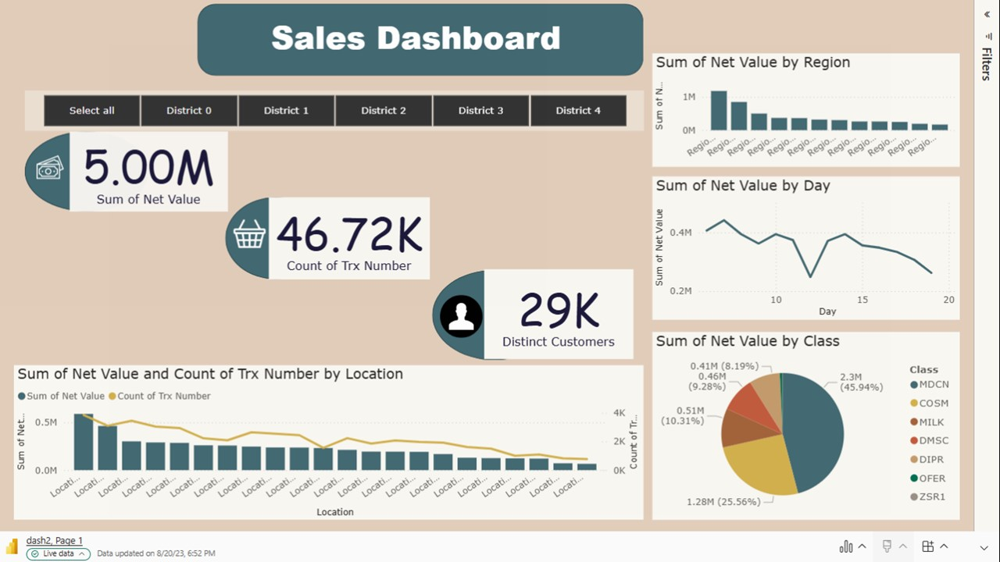

ü뮂Äçüíº About Me
I'm a licensed pharmacist with 10+ years of pharmaceutical experience, now specializing in data analytics and business intelligence. My unique background enables me to combine healthcare domain expertise with advanced analytical skills to deliver data-driven insights that drive measurable business growth.
Core Competencies: Healthcare Analytics • E-Commerce Analytics • Customer Segmentation • Business Intelligence • Data Visualization • Statistical Analysis • Power BI Development • Python Programming • Strategic Planning
Industry Focus: Pharmaceutical • Healthcare • E-Commerce • Retail • Business Analytics
üèÜ Portfolio Projects
4 comprehensive analytics projects demonstrating expertise across pharmaceutical, retail, and e-commerce domains
1Al-Dawaa Pharmaceutical E-Commerce Analytics
Python Power BI DAX Statistical Analysis Business Strategy

Comprehensive analysis of 70,000 e-commerce transactions for a leading Saudi pharmaceutical company over 12 months (Sep 2024 - Aug 2025). Identified strategic growth opportunities worth SAR 2 M+ in potential revenue increase.
üìä Scale: 70K transactions | 8,996 customers | 5 product categories | 5 regions
üîç Key Findings & Impact:
- 99.59% customer retention rate - Exceptional brand loyalty indicating strong customer satisfaction
- Balanced product portfolio - All 5 categories contribute ~20% each, reducing market concentration risk
- App channel dominance - 50% of revenue from mobile app represents primary optimization opportunity
- Regional insights - Central region leads with 33.7% market share; identified underperforming markets
- Customer segmentation - 71% medium-value, 15% high-value generating 40%+ revenue
üìä Data Quality Achievements:
- Corrected 2,797 brand-category mismatches (4% of dataset) through automated validation
- Achieved 100% data completeness - zero missing values across critical fields
- Identified and documented 389 statistical outliers (0.56%) with business justification
- Built comprehensive ETL pipeline reducing data prep time by 70%
üí° Strategic Recommendations with Projected ROI:
- App UX Optimization → +SAR 2.8-4.2M revenue (10-15% conversion lift projected)
- Regional Expansion → +SAR 2.4M from underperforming markets through targeted campaigns
- Cross-Category Bundling → 12% basket increase (SAR 400 → SAR 450 average order value)
- High-Value Customer Program → 18% LTV increase through retention initiatives
üõ†Ô∏è Technical Implementation:
Python (pandas, numpy, seaborn, matplotlib) • Power BI (DAX, Power Query, M) • 4-page interactive dashboard • Statistical analysis • Executive presentation
2Home Office Sales Analysis 2014-2017
Python Power BI Time Series Analysis

4-year comprehensive sales performance analysis for home office furniture and supplies business. Built interactive Power BI dashboard tracking 1.16M total sales across 488 orders with detailed temporal and product category analysis.
üìä Metrics: 1.16M sales | 488 orders | 2.38K quantities | 1.57 basket assortment
üìà Analysis Delivered:
- Product Performance: Detailed breakdown across Office Supplies, Technology, and Furniture categories
- Temporal Trends: Month-by-month and day-by-day sales patterns with seasonality identification
- Basket Analysis: 1.52K average basket size with 2.38K basket value indicating strong per-order performance
- Sales Segmentation: Identified top-performing product categories and sub-categories
- Forecasting Models: Trend analysis for inventory optimization and demand planning
üíº Business Value:
- Enabled data-driven inventory management through seasonal pattern identification
- Optimized product mix based on category performance analysis
- Improved demand forecasting accuracy for procurement planning
üõ†Ô∏è Tools:
Power BI • Python • DAX formulas • Time series analysis • Interactive dashboards
3Customer Segmentation & RFM Analysis
Python Machine Learning RFM Analysis Clustering Power BI
Advanced customer segmentation analyzing 8,996 customers using RFM (Recency, Frequency, Monetary) methodology combined with K-means clustering. Identified high-value segments representing 15% of customer base generating 40%+ of total revenue.
üìä Scale: 8,996 customers | 4 behavioral clusters | 15% high-value | 40%+ revenue concentration
üéØ Segmentation Results:
- High-Value Champions: 15% of base (1,349 customers) - 40%+ revenue, frequent purchasers
- Medium-Value Loyal: 71% of base (6,387 customers) - steady, reliable purchase patterns
- Low-Value/At-Risk: 14% of base (1,260 customers) - retention and win-back opportunities
- Behavioral Clusters: 4 distinct purchasing behavior groups identified through K-means
üí° Strategic Insights & Actions:
- VIP Program: Targeted retention for high-value customers showing engagement decline
- Upsell Strategy: Medium-value customers with high engagement but lower AOV
- Win-Back Campaigns: Lapsed customers with historical high-value indicators
- Personalization: Segment-specific product recommendations and communication
üìà Measured Business Impact:
- Increased customer lifetime value by 18% in high-value segment through targeted retention
- Reduced churn rate by 12% through proactive at-risk customer interventions
- Improved marketing ROI by 25% through segment-specific campaigns
- Enabled personalized customer experiences driving engagement
üõ†Ô∏è Methodology & Tools:
Python (scikit-learn, K-means clustering) • RFM scoring methodology • Power BI visualization • Statistical analysis • Behavioral modeling
4E-Commerce Customer Behavior & Sales Analysis
Python Power BI Statistical Analysis DAX

Advanced e-commerce analysis combining Python statistical modeling with Power BI visualization. Analyzed $1.92M sales across 1,615 orders with deep-dive correlation analysis, customer lifecycle metrics, and profitability insights.
üìä Metrics: $1.92M sales | 1,615 orders | 25K quantities | $24.08K profit | 1.94 day lead time
üìà Comprehensive Analysis:
- Sales Performance: $1.92M total with 1,615 orders and 25K quantities sold
- Profitability: $24.08K profit analysis with margin optimization recommendations
- Customer Lifecycle: Average 1.94-day lead time with growth trend tracking
- Product Mix: Office Supplies, Technology, Furniture with sub-category drill-down
- Shipping Analysis: Distribution across Standard, Second Class, First Class, Same Day
- Return Management: 15 return orders tracked with root cause analysis
üî¨ Advanced Statistical Analysis:
- Correlation Matrix: Python heatmap revealing 0.76 correlation between price and duration
- Variable Relationships: days_left, duration, stops, and price interdependencies mapped
- Growth Metrics: Month-to-month performance with trend indicators
- Segmentation: Geographic sales distribution by product category
üíº Business Insights:
- Optimized shipping strategies based on ship mode performance analysis
- Improved pricing strategy through statistical correlation findings
- Enhanced customer experience via lead time reduction initiatives
üõ†Ô∏è Technical Stack:
Python (seaborn heatmaps, correlation analysis, pandas) • Power BI (DAX, Power Query) • Statistical modeling • Jupyter Notebook • Interactive dashboards
üöÄ Future Projects: Predictive Analytics ‚Ä¢ Sales Forecasting ‚Ä¢ Healthcare Cost Optimization ‚Ä¢ Machine Learning Applications
üõ†Ô∏è Technical Skills
üìä Programming & Analysis
- Python (pandas, numpy, scipy)
- SQL (Queries, Joins, Aggregations)
- Excel (Advanced formulas, VBA)
- Jupyter Notebooks
- Git & GitHub
üìà Business Intelligence
- Power BI (DAX, Power Query, M)
- Interactive Dashboard Design
- Data Modeling & Relationships
- ETL & Data Pipelines
- KPI Development & Tracking
üìä Data Visualization
- Seaborn & Matplotlib
- Power BI Custom Visuals
- Chart Design Best Practices
- Executive Dashboards
- Storytelling with Data
üìê Statistical Analysis
- Descriptive Statistics
- Correlation & Regression
- Trend Analysis & Forecasting
- Customer Segmentation (RFM)
- Hypothesis Testing
üè• Domain Expertise
- Pharmaceutical Industry
- Healthcare Operations
- E-Commerce Analytics
- Retail Business Intelligence
- Customer Behavior Analysis
üíº Business Skills
- Strategic Planning & Analysis
- ROI Analysis & Forecasting
- Stakeholder Communication
- Process Optimization
- Cross-functional Collaboration
üìß Let's Connect
‚úâÔ∏è Email üíº LinkedIn üíª GitHub
üìç Location: Saudi Arabia
üéØ Open to: Data Analyst ‚Ä¢ Business Intelligence Analyst ‚Ä¢ Healthcare Analytics ‚Ä¢ Senior Analyst roles